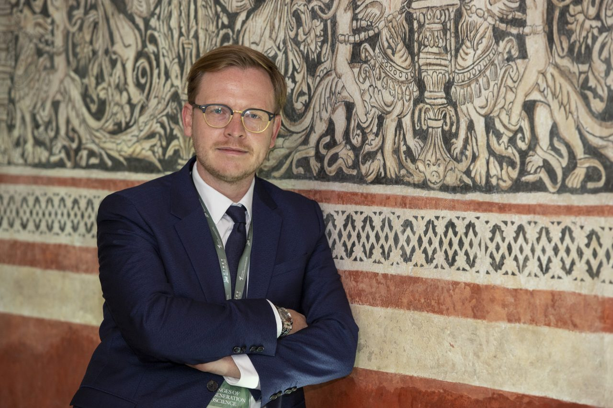
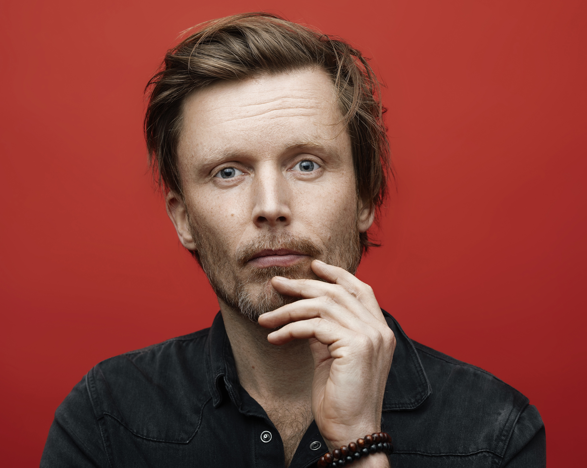
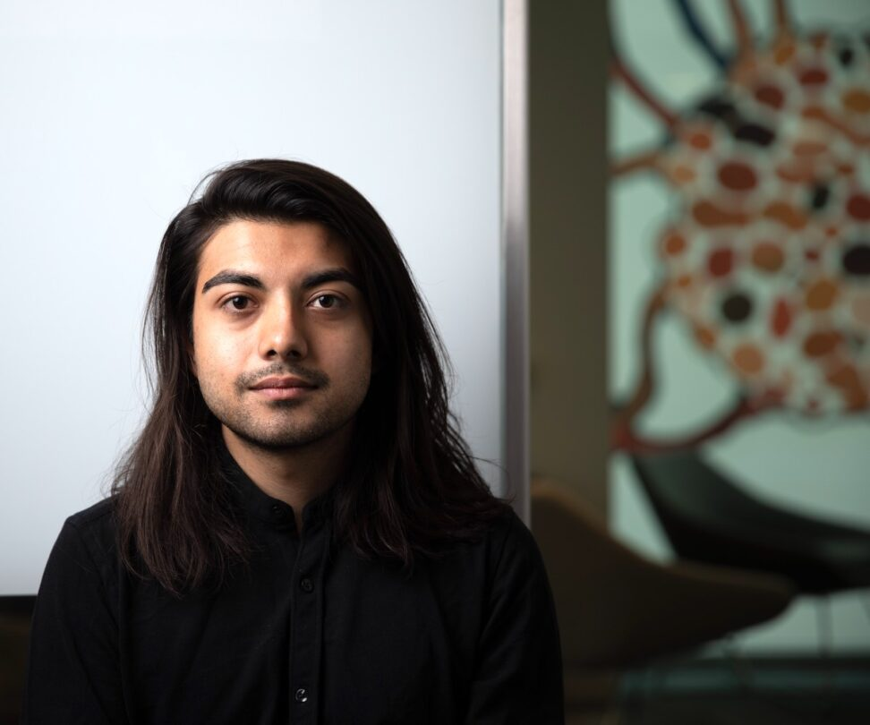
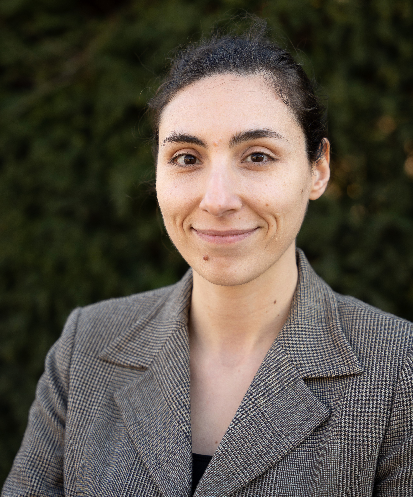

Markus Gabriel
University of Bonn
Professor at the University of Bonn and director of the Center for Science and Thought, working on philosophy of mind, selfhood, agency, and ethical questions around AI.
The workshop will take place in Paris on December 12, 2026.
| Time | Event | Moderator |
|---|---|---|
| 08:30-08:45 | Introduction to the workshop and framing of the day. | Organizers |
| Time | Event | Moderator |
|---|---|---|
| 08:45-09:15 | Introductory keynoteSpeaker: Markus Gabriel | |
| 09:15-10:15 | Panel: What Is a Self? Philosophical Foundations and Computational Models | Sandrine Rose Schiller Hansen |
| Time | Event | Moderator |
|---|---|---|
| 10:15-10:45 | Coffee break |
| Time | Event | Moderator |
|---|---|---|
| 10:45-11:15 | Introductory keynoteSpeaker: Anders Søgaard | |
| 11:15-12:15 | Panel: Who Defines Me? AI Personalization, Relationships, and Self-Understanding | Monojit Choudhury |
| Time | Event | Moderator |
|---|---|---|
| 12:15-13:30 | Lunch & Networking |
| Time | Event | Moderator |
|---|---|---|
| 13:30-14:00 | Introductory keynoteSpeaker: Advait Sarkar | |
| 14:00-15:00 | Panel: Who Is in Control? Agency, Dependence, and Human–AI Collaboration | Jacki O'Neill |
| Time | Event | Moderator |
|---|---|---|
| 15:00-15:30 | Virtual Paper Teasers (1 min / paper) | |
| 15:30-17:00 | Poster session & Coffee break | |
| 17:00-17:30 | Invited talk (virtual)Speaker: Munmun De Choudhury | Dr. Haneesha Pinnaramaju |
| 17:30-18:15 | Invited talkSpeaker: Mariya Toneva | |
| 18:15-18:30 | Closing remarks, best paper awards, and next steps | Organizers |
| 19:00-21:00 | Dinner |

University of Bonn
Professor at the University of Bonn and director of the Center for Science and Thought, working on philosophy of mind, selfhood, agency, and ethical questions around AI.

University of Copenhagen
Professor of NLP and machine learning at the University of Copenhagen, working across language models, fairness, language and culture, and philosophical questions about AI.

Microsoft Research · University of Cambridge
Researcher at Microsoft and affiliated lecturer at Cambridge, studying human–AI interaction and how generative AI affects cognition, critical thinking, and knowledge work.

Max Planck Institute for Software Systems
Tenure-track faculty at the Max Planck Institute for Software Systems, leading the BrAIN group at the intersection of machine learning, language, and neuroscience.